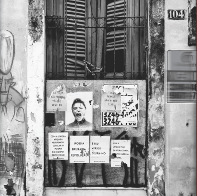

Jornalismo
Aqui estão algumas das suas publicações em blog, PDF e radiojornalismo. Você pode seguir adicionando novos trabalhos depois, mantendo a mesma estrutura de cards e tags.
 Post de Blog
Post de Blog
Brejo paraibano se prepara para receber a 1ª edição do Festival Bananeiras de Cinema
Festival ocorrerá nos dias de 08 a 12 de novembro com uma mostra de filmes nacionais e internacionais. Além disso, o evento promove oficinas e atrações para a comunidade de Bananeiras.
 Post de Blog
Post de Blog
Do drum and bass ate o rap experimental, artista Diznaju agitara a capital paraibana com Sensacao_ O Baile
Com uma proposta de celebração e experimentação, o artista Diznaju apresentará neste sábado (11) um long set com uma variedade de estilos musicais.
 Post de Blog
Post de Blog
Cantor paraibano Erick retorna aos palcos com o lancamento da sua musica "Nego Peto de Vó"
Ex-integrante do grupo musical Baluarte, Erick de Almeida, volta aos palcos no dia 06 de dezembro com o lançamento da música ‘Nêgo Pêto de Vó’, que homenageia sua avó materna.
 Post de Blog
Post de Blog
Com uma mistura de elementos do teatro do absurdo, Cidade Cão estreia nesta sexta-feira no Teatro Paulo Pontes
A peça, que é o produto final do Curso de Teatro da Fundação Espaço Cultural, estará no Teatro Paulo Pontes nesta sexta e sábado.

PDFCidade Velha, Novos Cronistas
Livro de crônicas publicado pela editora Ideia. Produto final da cadeira de "Jornalismo Impresso".
 Postagem de Blog
Postagem de Blog
Caminhos do Frio: festival movimentos cultura e turismo no Brejo paraibano
Ana carolina, marcelo falcão e taty girl são algumas das atrações musicais deste ano.
 Postagem de Blog
Postagem de Blog